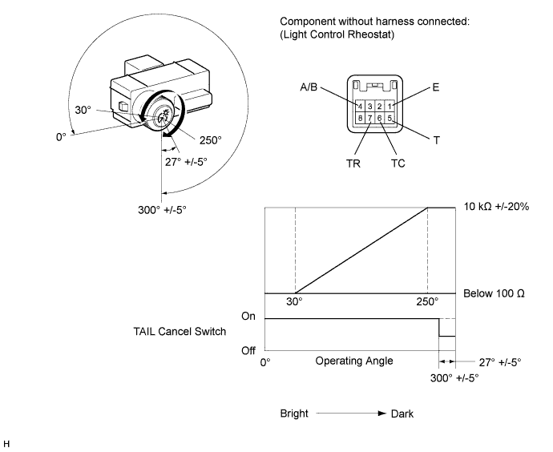

LIGHT CONTROL RHEOSTAT > INSPECTION |
| 1. INSPECT LIGHT CONTROL RHEOSTAT |
Inspect the light control rheostat.
Measure the resistance according to the value(s) in the table below.

| Tester Connection | Switch Condition | Specified Condition |
| 6 (TC) - 1 (E) | TAIL cancel switch off → on | 10 kΩ or higher → Below 1 Ω |
| 5 (T) - 1 (E) | Always | 10 kΩ or higher |
| 7 (TR) - 1 (E) | Light control rheostat fully turned right → fully turned left | 10 kΩ or higher → Below 100 Ω |
Inspect the trip switch.
Measure the resistance according to the value(s) in the table below.
| Tester Connection | Switch Condition | Specified Condition |
| 4 (A/B) - 1 (E) | Trip switch on (Pushed) | Below 200 Ω |
| Trip switch off (Not Pushed) | 1 MΩ or higher |